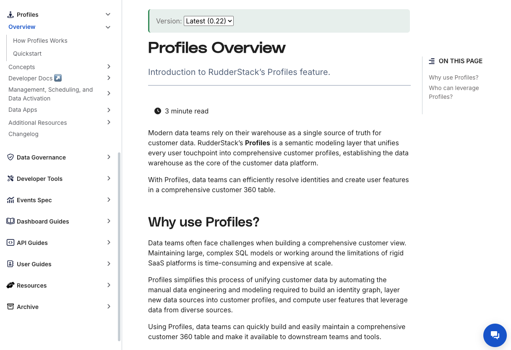

Isha Chopra
Technical Writer | Content Strategist
I write words that make your tech talk human.
Technical Writer | Content Strategist
I write words that make your tech talk human.
👋 Hey! I'm a Technical Writer with 10+ years of experience turning complex tech into delightful, user-friendly content. I specialize in crafting documentation for SaaS platforms, developer tools, SDKs, and APIs.
ğŸ› ï¸ What I do
I've helped teams at Lyric.tech, RudderStack, and GrapeCity build content ecosystems that scale.
If your users are confused, I'm here to write them into clarity.
💬 Code is cool. But clear docs? That’s the real superpower. 💥
Nov 2024 - Present
Jan 2022 - Oct 2024
Jan 2021 - Dec 2021
March 2019 - Dec 2020
Jan 2018 - Jan 2019
Oct 2014 - Jan 2018
🧩 RudderStack Profiles
📋 Description: Wrote and maintained product documentation for the Profiles feature.
🔧 Tools: Hugo, GitHub
👩‍💻 My Role: Created all guides including Getting Started, Tutorials, and API References.
🔗 View Docs
🧩 User Suppression API
📋 Description: Wrote and maintained product documentation for the User Suppression API.
🔧 Tools: Hugo, GitHub
👩‍💻 My Role: Created API Reference guide.
🔗 View Docs

🧩 JavaScript SDK
📋 Description: Wrote and maintained product documentation for the JavaScript SDK.
🔧 Tools: Hugo, GitHub
👩‍💻 My Role: Created API Reference guide.
🔗 View Docs

🧩 Document Solutions PDF Viewer
📋 Description: Wrote and maintained documentation for the .NET PDF Viewer.
🔧 Tools: Innovasys, Snagit
👩‍💻 My Role: Created all guides including Getting Started, Tutorials, and API References.
🔗 View Docs
🧩 Excel WEBSERVICE Function
📋 Description: Wrote a detailed blog on integrating Excel’s WEBSERVICE function with C#.
🔧 Tools: Innovasys, Snagit
👩‍💻 My Role: Authored the blog content and provided code samples.
🔗 View Blog

🧩 Freelancing Projects
📋 Description: Written blogs for Revv - self rental cars
📋 Description: Written blogs for Headout - travel company
👩‍💻 My Role: Authored the blog content and provided code samples.
✨Looking for a freelance or contractual technical writer? Let's work together!
Let's turn your complex product into content that clicks with your users.
Open to freelance gigs, consulting or editing projects, or just geeking out over good documentation!